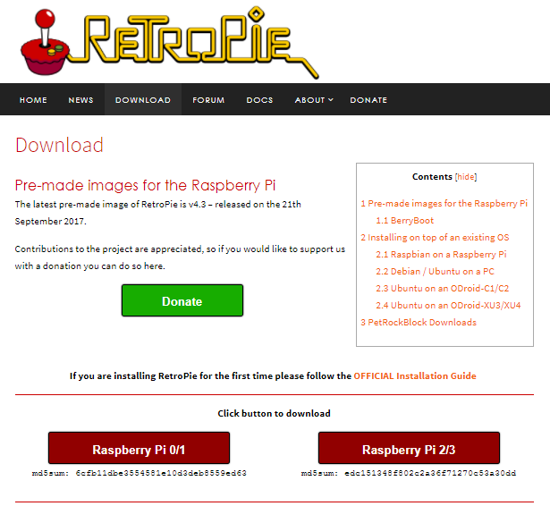

GUIDE
1.
Put the SD card into your PC/laptop. Then install RetroPie to the computer by going to the website and downloading the correct version for your Raspberry Pi. This guide uses Raspberry Pi 3. This will download a zipped image.
2.
Use 7-Zip to unzip the Retro Pi image by right clicking the file downloaded as shown on the photo. After this, open Etcher. This will extract the image to the SD card if you just find where you stored the RetroPie image.
3.
Now the software should be on the SD card. Put the SD card into the Raspberry Pi, then set up the equipment. If your unsure of how to do this, go to the equipment page. Once it is loaded, it will prompt you on how you want to set up your controller. This depends on what controller you decided to use. At this point, you have the software so it is now a console to play classic games.